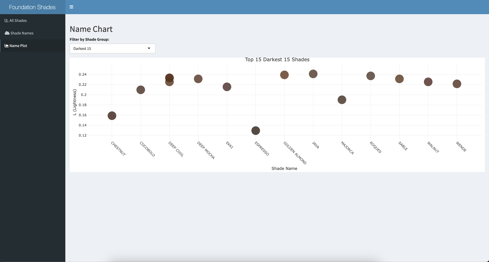

web_el <- remote_driver$findElement("css", ".btn-outline-primary")
web_el$clickElement()How Foundation Labels Reinforce Racial and societal Bias
Context and Significance of Data
This report discusses the naming choices of foundation shades by brands sold by the British beauty retailer SpaceNK. Foundation shade names are more than just labels, they have cultural meanings that reflect and shape societal perceptions of beauty and identify. By examining these labels, this report seeks to provide insights into the trends and patterns of stereotypes in the beauty space.
This report was inspired by the publication ‘The Naked Truth’ by Amaka and Thomas (2021), which highlights the implications of sequential numbering and naming trends in foundation shades. While ‘The Naked Truth’ only examines the marginalisation of darker shades, this report widens the scope by analysing and discussing the implications of names for lighter shades, comparing the two and how it contributes to the construction of beauty ideals, notions of privilege, and cultural identity.
The dataset from SpaceNK offers a variety of foundation products to analyse these dynamics, providing insights into branding and colorism. The significance of this research lies in its potential to illustrate how naming practices in the beauty industry both reflect and perpetuate societal hierarchies and ideologies, contributing to ongoing discussions in the social sciences.
Data Collection
Dynamic web scraping was employed to scrape the SpaceNK website for information about products’ foundation shades. Firstly, to ensure all product links were extracted from the foundation category page, I had to simulate clicking the load more button. Next was extracting the product links from the category page. This was done by finding a link element which took me to the product page. After reading the product page HTML, I chose the details of each product that I wanted to scrape. The final step was to combine all the scrapped product details into one data set.
category_page <- read_html(remote_driver$getPageSource()[[1]])
product_links <- category_page %>%
html_elements("a.swatch-container.show-more-swatch") %>%
html_attr("href")scrape_product_page <- function(url) {
#reading the product page HTML
webpage <- read_html(url)
#extracting brand name from heading 1
brand_name <- webpage %>%
html_element("a.text-primary.h1") %>%
html_text(trim = TRUE)
#extracting product name from heading 4
product_name <- webpage %>%
html_element("p.product-name.h4") %>%
html_text(trim = TRUE)
#extracting shade names from assistive text
shade_names <- webpage %>%
html_elements("span.sr-only.selected-assistive-text") %>%
html_text(trim = TRUE)
#extracting shade colours from the style attribute
shade_colours <- webpage %>%
html_elements("span.simple-swatch") %>%
html_attr("style") %>%
#getting the hex codes by matching the css background colour
gsub(".*background-color: (#[0-9A-Fa-f]{6});.*", "\\1", .)#making an empty list to put data inside
foundation_data <- list()
#getting the product URLs to scrape
product_urls <- get_product_links(remote_driver)
#combining the scraped product URLS into the list
foundation_data <- lapply(product_urls, scrape_product_page) %>%
bind_rows()Data Wrangling
To be able to order the shade colours from dark to light, the HSL values were needed, to get this, I first had to change the HEX value to RGB. Afterwards, I wanted only shades with words, therefore I removed any numbers. There was still a lot of cleaning to do for the names after this, for example some brands named their shades “SHADE 1” , so the word “SHADE” was redundant in this context. Furthermore, some products had standalone letters such as “N”, “W” or “C” in the name which stood for the undertone of the product and were removed accordingly.
rgb_values <- col2rgb(foundation$ShadeColour)
hsl_values <-rgb2hsl(rgb_values)foundation_words <- foundation %>%
mutate(
#removing all numbers in the shade name
ShadeWords = str_remove_all(ShadeName, "\\d+\\.\\d+|\\d+"),
#shade names with just numbers will be coded as NA and removed from dataframe
ShadeWords = na_if(ShadeWords, "")
)#these were brands that did not use words to describe their shades but still had words, e.g. 'SHADE 1'
foundation_words <- foundation_words[!grepl("Charlotte|Anastasia|Glossier|Terry|Lisa|KOSAS|ROSE|MONIKA|RARE|KEVYN|WESTMAN",
foundation_words$Brand, ignore.case = TRUE), ]
#this product was named 'SHADE 1' , 'SHADE 2' and was therefore removed as it is a number based system
foundation_words <- foundation_words[!grepl("ReEvolve Natural Finish Foundation",
foundation_words$ProductName, ignore.case = TRUE), ]
#some shades have standalone letters like "N" , "C" or "N+" before the name, which stand for neutral or cool, which I decided to remove
foundation_words$ShadeWords <- foundation_words$ShadeWords %>%
str_remove_all("\\b[N|C|W|B|O|R]\\b") %>%
str_remove_all("\\bSF\\b|\\bNR\\b|\\bST\\b|\\bOB\\b|\\bOC\\b|\\bOR\\b|\\bFE\\b") %>%
str_remove_all("[\\+\\.]") %>%
str_squish()In the end, I had created 2 data sets: “foundation” and “foundation_words”. “foundation” includes all the brands, product names, shade names, shade colours and L (lightness) values, with 1481 observations. This was created before the clean up of shade names and therefore still has the shade names with numbers. This is so that I could plot all the shades and visualise them on a bar chart to show the distribution later. “foundation_words” includes all of the variables mentioned above, however only includes 644 observations due to the clean up of shade names, removing any products that used a numbering system.
The variables “Brand”, “ProductName”, “ShadeName” and “ShadeColour” are all characters, the shade colours are in the form of hex values. “L” is a numeric variable, representing the lightness value from the HSL: the higher the number (0-1), the lighter the shade and vice versa.
I had also created 2 additional data frames called “darkest_shades” and “lightest_shades” which show the top 15 darkest and lightest shades respectively.
Data Exploration and Visualisation
Using R shiny, an interactive dashboard was built with 3 different visualisations, the app includes a sidebar menu where you can toggle between visualisations. You can access the app through the “app.R” file on Github.
Bar Chart
#rendering barplot
output$allshades_plot <- renderPlot({
foundation_filtered <- foundation %>%
filter(L >= input$lightness1[1], L <= input$lightness1[2]) %>%
#grouping L values by intervals of 0.01
mutate(L_interval = cut(L, breaks = seq(0, 1, by = 0.01), right = FALSE))
#making the bar plot
ggplot(foundation_filtered, aes(x = L_interval, fill = ShadeColour)) +
geom_bar(stat = "count", color = "white", width = 1) +
scale_fill_identity() +
scale_x_discrete(name = "Lightness (L)", limits = levels(foundation_filtered$L_interval)) +
labs(title = "Barplot: Foundation Shades by Lightness",
y = "Frequency",
x = "Lightness (L)") +
theme_minimal() +
theme(axis.text.x = element_text(angle = 45, hjust = 1))
})The bar chart visualises the distribution of all foundation shades by their lightness, we can see that there is a skew towards the lighter shades, highlighting the uneven distribution. This suggests that the availability and accessibility for those with a lighter skin colour is prioritised, which reflects cultural biases and Eurocentric beauty standards. The lack of darker shades in comparison indicates a lack of inclusivity in the beauty industry, making it harder for the people within that shade range to access foundation shades and therefore excluding them.
The bar chart format makes these patterns immediately apparent by showing shade frequencies across the entire spectrum, allowing for a clear comparison of underrepresented and overrepresented ranges. By clearly visualising disparities in shade availability, it emphasises gaps in inclusivity, and therefore could be used to guide product development for greater inclusivity.
Name and Shade Plot

#name plot
selected_shades <- reactive({
if (input$shade_filter == "Darkest 15") {
return(darkest_shades)
} else {
return(lightest_shades)
}
})
#rendering plot based on shade groups
output$nameplot <- renderPlotly({
shades_data <- selected_shades()
#creating a plotly scatter plot with hover text
plot_ly(
data = shades_data,
x = ~ShadeWords,
y = ~L,
type = 'scatter',
mode = 'markers',
marker = list(
color = ~ShadeColour,
size = 30,
opacity = 0.8
),
text = ~paste("Brand:", Brand, "<br>Product Name:", ProductName),
hoverinfo = "text"
) %>%
layout(
title = paste("Top 15", input$shade_filter, "Shades"),
xaxis = list(title = "Shade Name", tickangle = 45),
yaxis = list(title = "L (Lightness)")
)
})The plots show the top 15 darkest and lightest shades, with the shade names at the bottom. These help to illustrate the fact that lighter shades are named after valuable objects with ‘elegant’ connotations, i.e. opaline, swan, shell etc., whereas darker shades are named after edibles like espresso, almond, walnut etc.. We can also see that for darker shades, there are also names of wood, like Cocobolo and Ekki, which have connotations of hardness and durability, in stark contrast to the connotations of Pearls and Swans.
This plot was chosen because it effectively showcases the naming choices of the top 15 darkest and lightest foundation shades while also allowing for the visualisation of their shades. The design of this chart helps the clarity and interpretation by highlighting the descriptive names and the respective shade, which was a bit difficult to see in the word cloud.
Word Cloud
# Word cloud
# Filters data based on L value range (0-1)
filtered_data <- reactive({
foundation_words %>%
filter(L >= input$lightness[1] & L <= input$lightness[2])
})
# Rendering word cloud
output$shadenames_cloud <- renderWordcloud2({
# Using foundation_words dataset and filtering based on Lightness
data <- foundation_words %>%
filter(L >= input$lightness[1], L <= input$lightness[2])
word_freq <- data %>%
group_by(ShadeWords) %>%
summarize(freq = n(), .groups = "drop") # Getting count of each shade word
# Finding the lightest shade color for each shade word
lightest_colors <- data %>%
group_by(ShadeWords) %>%
filter(L == max(L)) %>% # Select the row with the highest L (lightness)
slice(1) %>% # Take the first occurrence
select(ShadeWords, ShadeColour)
# Merge frequency and color data
final_data <- left_join(word_freq, lightest_colors, by = "ShadeWords")
# Making the word cloud with the lightest shade color
wordcloud2(data.frame(word = final_data$ShadeWords,
freq = final_data$freq),
size = 0.5,
color = as.vector(final_data$ShadeColour),
backgroundColor = "white")
})This word cloud shows the names of foundation shades, with the most frequent word used bigger. We can see that in the word cloud image, the largest words: Alabaster, Ivory, Honey, Chestnut and Amber.
Alabaster, Ivory and Porcelain (most commonly used for the lighter shades) are all white coloured, valuable materials and have been historically linked to luxury and higher status (alabaster and ivory used in carvings ornaments and porcelain in china dishes); this may reinforce the idea that lighter skin is ‘superior’ and deemed more ‘valuable’. This aligns with societal standards that often favour lighter skin tones, and these naming choices reinforce colorism by embedding cultural preferences for lightness directly into product branding.
Words like Chestnut, Espresso, Mocha and Cappuccino were most commonly used to describe darker shades. Darker shades appear to be more commonly named after consumable items which are considered less ‘valuable’ than the luxury materials listed above. Furthermore, naming the shades after food and drinks can be dehumanising as the authors of ‘The Naked Truth’ highlight, as it draws connotations of indulgence.
A word cloud was chosen to visualize the data as it highlights the most frequently used terms in foundation shade names, providing an immediate understanding of naming patterns. The varying word sizes make prominent trends easy to identify, transforming a large dataset into an engaging format.
In conclusion, the naming conventions and distribution of foundation shades carry significant social and cultural implications. These naming patterns reinforce hierarchies of value, existing stereotypes and deeper societal biases by marginalising darker skin tones by associating them with everyday consumables, while lighter tones are linked to rare luxuries. Such trends in the beauty industry highlight the ongoing need for more inclusive and thoughtful representation to promote equity in how diverse skin tones are marketed.
References
Amaka Ofunne and Amber Thomas. “How the Names of 6,816 Complexion Products Can Reveal Bias in Beauty.” The Pudding, March 2021, https://pudding.cool/2021/03/foundation-names/.